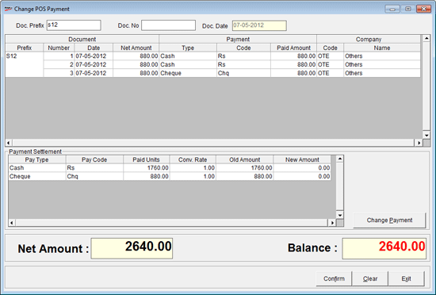
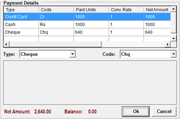

This option addresses the flexibility of changing the payment details (mode of payment) once the bill is settled. This option is available only in the Retail flavour of Shoper POS.
For example, if a POS user settles a bill using F7 option during billing by Cash mode as per the customer's choice. Later, the customer realises that enough cash is not available to settle the bill and offers credit card for settling the bill. In such a case, the user can change the payment mode from Cash to Credit Card.
Change Payment Mode is not permitted if:
Tally Interface is executed for a given transaction
Online polling is executed for a given transaction
Day End process is executed
Payment is made through credit note
Credit card transaction is submitted for realisation
Online authorisation for credit card is ON
The bill is generated using older version of Shoper and migrated to Shoper 9
Advance Receipt, Credit Note & On-ACC payment modes are there.
Cash Lift Carried Out.
Payments to HO Carried out.
The options Submission and Realisation are also applicable for Gift Voucher transactions.
How to reach: Sales > Change Payment Mode
The Change POS Payment Modes window is displayed.

Doc Prefix: Enter the Document Prefix of the bill.
Doc No.: Enter the Document Number of the bill.
Doc Date: Displays Document date
Item Details: The item details in the specified bill are displayed in this grid.
Payment Settlement: The payment details like payment type, payment code, amount, etc. are displayed in this grid.
Change Payment: Select to make changes to the mode of payment and the amount.
The Change Payment screen is displayed.

By default, Cash and Cheque options are available to change the mode of payment.
Credit Card option will be enabled if catalogued in Payment Catalogue and will display the details as catalogued in Payment Catalogue.
Note: In the allocation screen the user can change the payment mode of multiple bills to Cash, Credit and Cheque payment modes at one go. This is applicable only if multiple bills are present with multiple pay modes. Click here for more information.
Type: Select the type of payment such as Cheque, Cash or Credit card.
Grid
Click to enter amount in the grid against selected payment type.
The validations are carried out to make sure that the sum total of all the payment modes exactly matches the original bill amount displayed.